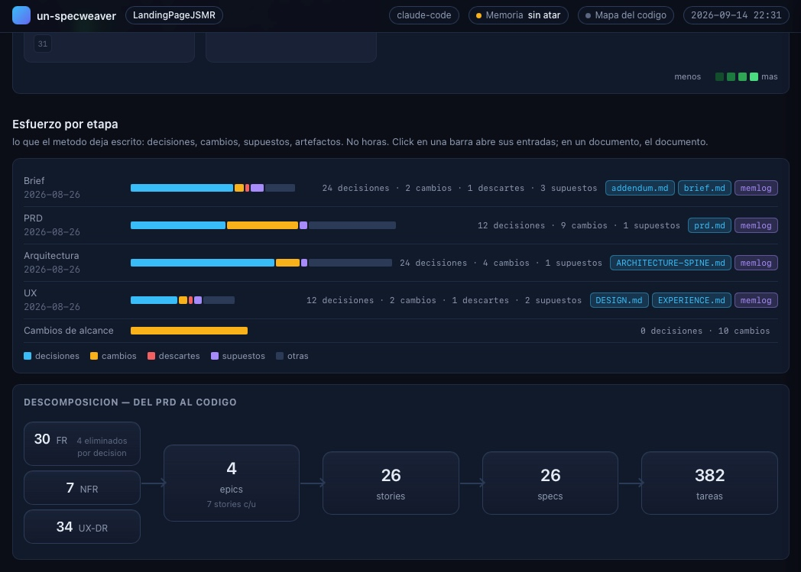
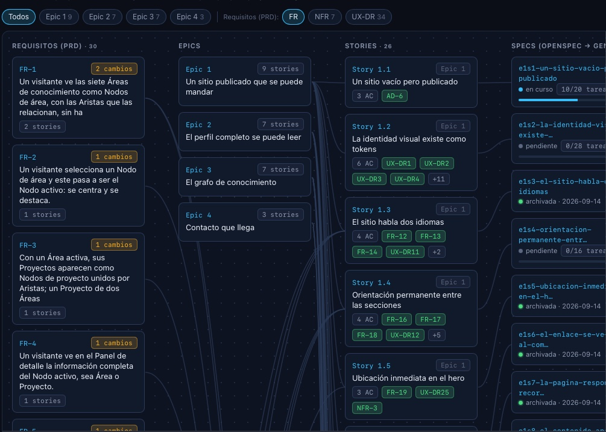
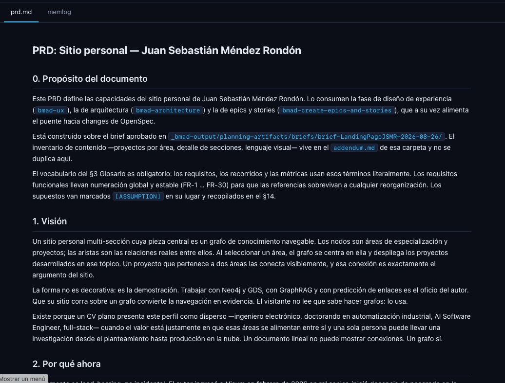
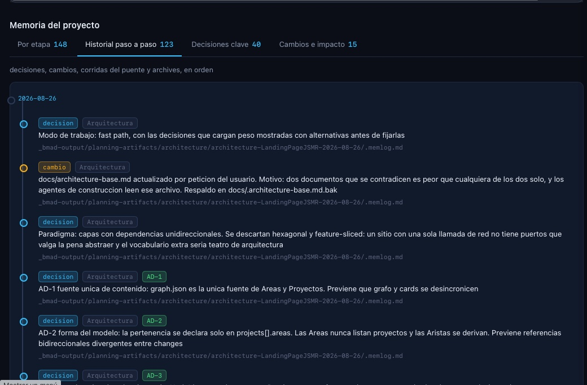

Agentes de IA en el ciclo de vida del desarrollo de software: motivación y propuesta
2 · Motivación
El ciclo de vida tradicional: fases y handoffs
- Fases secuenciales: requisitos, diseño, implementación, pruebas, despliegue y mantenimiento. Cada una con su rol y su entregable.
- Tres estrategias dominantes: cascada, iterativo/ágil y Development + Operations (DevOps) con Continuous Integration / Continuous Delivery (CI-CD).
- Cada frontera es un handoff humano: un documento, una reunión y una espera entre fases.
- El costo de corregir crece con la fase: cuanto más tarde se detecta un error de requisitos, más caro resulta corregirlo.
- Feedback lento: el ciclo de aprendizaje se mide en semanas o meses, no en minutos.
3 · Motivación
La IA reconstruye el ciclo: de fases a bucles
- Los artefactos se generan, no se redactan: specs, código, pruebas y documentación salen en minutos (Hou et al., 2024).
- El cuello de botella se mueve: deja de estar en escribir y pasa a estar en especificar y verificar.
- Las fases se solapan: un mismo agente cruza diseño, código y pruebas dentro de un solo bucle, sin handoff intermedio.
- El feedback pasa de semanas a minutos: el ciclo se recorre varias veces al día.
- Aparece una fase nueva: curar el contexto —specs, memoria y skills— es ahora trabajo de ingeniería.
4 · Perfiles en evolución
Perfiles tradicionales: back-end, front-end, full stack
- Back-end: APIs, modelo de datos, escalabilidad e infraestructura. Manda en el servidor.
- Front-end: interfaz, manejo de estado, accesibilidad y rendimiento en el navegador.
- Full stack: cruza las dos puntas, pero rara vez con la misma profundidad en ambas.
- El límite de la vieja escuela: el perfil se optimizó para producir código rápido, y esa es justo la capa que la IA ya cubre.
- Lo que no se automatiza: decidir la arquitectura, poner los límites del sistema y saber qué NO construir.
5 · Perfiles en evolución
Product Owner (PO) y analistas: depurar la idea antes de que exista código
- Product Owner / Business Analyst: traducen la necesidad del negocio en historias, criterios de aceptación y prioridad.
- El tiempo real se va aquí: depurar la idea —preguntas de aclaración, ejemplos, casos borde— antes de que exista una sola línea de código.
- La ambigüedad no resuelta se paga después: un requisito mal entendido se detecta ya en código y obliga a reprocesar diseño e implementación.
- Los agentes asisten, no decretan: proponen preguntas de clarificación y borradores de historias, pero la prioridad y el alcance siguen siendo criterio humano —aquí con más supervisión que en código.
- El rol no desaparece, se afila: menos tiempo redactando documentos, más tiempo validando con el cliente real.
6 · Perfiles en evolución
¿Dónde ejecuta la IA y dónde decide el humano?
- La IA ejecuta: explorar el repo, generar código y pruebas, refactorizar, documentar y dar la primera pasada de revisión.
- En requisitos, la IA solo asiste: propone preguntas de aclaración y borradores de historias, nunca decide alcance ni prioridad.
- El humano decide: la intención, los requisitos, la arquitectura y los criterios de aceptación. Nada de eso se delega.
- El humano verifica: lee el diff, corre las pruebas que importan y responde por seguridad y datos sensibles (NIST, 2023).
- Puertas irrenunciables: merge, despliegue a producción y cualquier operación destructiva o irreversible (Unión Europea, 2024).
7 · Chat vs Agente
Chat responde texto. Agente actúa.
- Un chat genera texto: responde, y ahí termina su alcance.
- Un agente actúa: lee código, edita archivos, ejecuta tests y guarda aprendizaje (Wang et al., 2024).
- La diferencia: pedir consejo frente a tener un par-programmer con acceso al proyecto.
8 · Chat vs Agente
El mercado de agentes: precio, licencia y quién corre qué
- El benchmark de referencia se rompió: OpenAI auditó el 27,6% de SWE-bench Verified y halló tests defectuosos en el 59,4% de los problemas difíciles sin resolver; dejó de reportarlo y GPT-6 Astra se lanzó sin esa cifra.
- Sin cifra comparable, quedan los hechos duros: precio por token, licencia y qué harness puede correr qué modelo. Eso sí se verifica en la tarifa oficial de cada proveedor.
- Pagos y cerrados: Claude Code (Anthropic) y Codex (OpenAI) —harness propio y modelo propietario, por suscripción o consumo. Abiertos: OpenCode —open source, más de 75 proveedores con tu propia llave.
- La brecha hoy se mide en precio: de $10 por millón de tokens de entrada (GPT-6 Astra, Claude Fable 5.1) a $0,66 (DeepSeek V4-Pro, licencia MIT) —hasta 15× de diferencia por el mismo trabajo.
- La decisión es de arquitectura: el frontier dejó de ser exclusivo de quien paga premium. Lo que se elige ya no es quién puntea un ranking, sino qué modelo conviene para cada tarea del ciclo.
9 · Evidencia
Velocidad y adopción: lo que miden los estudios
- 55% más rápido: 95 desarrolladores completaron la misma tarea con y sin GitHub Copilot —1h11 frente a 2h41— en un experimento controlado (Kalliamvakou, 2024).
- 21% menos tiempo en tareas complejas de empresa: ensayo controlado con 96 ingenieros de Google usando autocompletado y generación de código con IA (Paradis et al., 2024).
- Hasta 2x más rápido en tareas puntuales: los equipos que adoptan IA generativa reportan 20-30% más eficiencia (Karaci Deniz et al., 2023).
- La adopción ya es mayoritaria: 90% de casi 5.000 profesionales usa IA a diario, y más del 80% percibe una mejora de productividad (DevOps Research and Assessment (DORA), 2025).
- Pero adoptar no es suficiente: la misma medición encuentra que la IA amplifica tanto las fortalezas como las debilidades de cada organización (DORA, 2025).
10 · Evidencia
El matiz: el contexto decide cuánto ayuda la IA
- No es parejo: en código nuevo y de baja complejidad la IA aporta 30-40% de productividad; en código existente y complejo, apenas 0-10% (Denisov-Blanch, Stanford SWEPR).
- A veces resta: un ensayo con 16 desarrolladores experimentados y 246 tareas reales encontró que usar IA los hizo 19% más lentos en repos complejos que ya conocían (Becker et al., 2025).
- La percepción engaña: esos mismos desarrolladores estimaron que la IA los había hecho 20% más rápidos —la brecha entre sentirse productivo y serlo es real (Becker et al., 2025).
- La ganancia neta no es el código generado: depende de cuánto se pierde después en revisión y reproceso (Denisov-Blanch, Stanford SWEPR).
- Pero adoptar no es suficiente: la misma medición encuentra que la IA amplifica tanto las fortalezas como las debilidades de cada organización (DevOps Research and Assessment (DORA), 2025).
- La conclusión no cambia: la IA rinde más donde el criterio humano define bien la tarea y verifica el resultado —el mismo reparto por etapa que ya vimos.
11 · Evidencia
La IA amplifica: fortalezas y debilidades de la organización
- El hallazgo: la misma medición de DevOps Research and Assessment (DORA) encuentra que la IA amplifica tanto las fortalezas como las debilidades de cada organización (DORA, 2025).
- Sin reglas, amplifica el caos: procesos ambiguos, criterios de aceptación difusos y arquitectura sin definir se multiplican, no se corrigen.
- Con reglas, amplifica el criterio: especificaciones explícitas, convenciones del proyecto y memoria persistente convierten al agente en una extensión del desarrollador, no en un generador ciego.
- La diferencia no es el modelo: es el contexto que se le entrega —specs, arquitectura, límites— antes de dejarlo actuar.
- Por eso el criterio humano no desaparece: define las reglas que el agente amplifica; sin esa entrada, ningún agente compensa un proceso roto.
12 · Evidencia
Riesgos consolidados: qué falla cuando la IA actúa sin reglas
- Riesgo de seguridad: sin revisión, el código generado introduce vulnerabilidades en 45% de los casos —hasta 72% en Java— y acumula 2.74x más fallos que el código escrito por humanos (Veracode, 2025).
- Memoria escasa del agente: decidir bien exige conocer el sistema y las reglas ya documentadas, pero los archivos de contexto casi nunca cubren seguridad (14.8%) ni rendimiento (14.5%) —el agente decide sin esa memoria (Chatlatanagulchai et al., 2025).
- Desconexión con el código y las reglas: el uso libre del agente ignora oportunidades de reutilización y genera redundancia (Huang et al., 2026); entre 2020 y 2024 el refactor cayó de 24.1% a 9.5% de los commits mientras el código copiado y pegado subió de 8.3% a 12.3% (GitClear, 2025).
- La consecuencia: 88% de los desarrolladores reporta al menos un impacto negativo de la IA en deuda técnica, y 53% lo atribuye a código que parece correcto pero no es confiable (Sonar, 2026).
- La raíz común: cuando el criterio del arquitecto y del desarrollador no está codificado en reglas explícitas, el agente no tiene con qué alinearse —cada riesgo es la misma desconexión vista desde un ángulo distinto.
13 · La respuesta
Lo que se necesita: contexto amplio, no un prompt suelto
- No basta con un prompt mejor: los cuatro riesgos anteriores comparten una causa —el agente actuó sin el contexto que un desarrollador senior sí tiene.
- Reglas + conocimiento del negocio: qué requisitos importan, qué prioriza el negocio, qué ya se decidió y por qué —sin esto, el agente repite preguntas que el equipo ya respondió.
- Conocimiento de arquitectura: límites del sistema, convenciones del repo, qué NO tocar —sin esto, el agente propone código correcto en el vacío pero incompatible con lo que ya existe.
- Memoria de los agentes: que las decisiones y el contexto persistan entre sesiones —sin esto, cada sesión empieza de cero y el equipo vuelve a explicarlo todo.
- El patrón se repite: cada riesgo de la diapositiva anterior desaparece cuando una de estas tres piezas está presente.
- La propuesta concreta: archivos de arquitectura versionados, un workflow de ingeniería (Spec-Driven Development (SDD)) que ordena las fases, y memoria persistente entre sesiones —tres piezas, tres pilares.
14 · La respuesta
De pedir y rezar a un proceso de ingeniería
- El cuello de botella se movió: dejó de estar en escribir código y pasó a especificar y verificar (Hou et al., 2024).
- La respuesta no es un prompt mejor: es un proceso de ingeniería que alimenta al agente con reglas, arquitectura y memoria antes de dejarlo actuar.
- De «pedir y rezar» a una línea de montaje: reunir el contexto, especificar la tarea, aplicar el cambio, verificar el resultado —en ese orden, no al revés.
- No es nuevo: son los mismos principios de ingeniería de software —requisitos, arquitectura, trazabilidad— aplicados al flujo con IA (Hou et al., 2024).
- El resultado: un agente que decide con el mismo criterio del equipo, porque el proceso se lo entrega antes de escribir la primera línea.
15 · La respuesta
El ecosistema completo: cinco piezas, un sistema
- No es una herramienta, es un sistema: cada pieza cubre un límite distinto del agente —sin ellas, vuelve la amnesia, la genericidad y la desconexión.
- Levantamiento de requerimientos: metodología que convierte preguntas de negocio en requisitos numerados —la base de todo lo demás.
- Arquitectura: límites del sistema y convenciones documentadas, para que el agente no proponga en el vacío.
- Memoria, contrato y patrones: el contexto sobrevive a la sesión, la especificación o la prueba se escribe antes que el código, y las convenciones quedan codificadas —continuidad, estructura y consistencia.
- Juntas, no por separado: el sistema profesional aparece cuando las cinco piezas trabajan como una sola cadena.
16 · La respuesta
Vincular el proceso: de los requisitos al código
- Seis fases, un artefacto cada una: entender, decidir, descomponer, traducir, construir y cerrar —cada una deja algo verificable, no solo código.
- La primera fase es la que nos ocupa: entender conecta requisitos, flujo de preguntas y el código que se va a producir —ahí nace el Product Requirements Document (PRD) y las épicas.
- El agente necesita una base de conocimiento: metodologías de levantamiento de requisitos —preguntas de aclaración, criterios de aceptación, casos borde— convertidas en reglas que el agente sigue, no en intuición.
- Trazabilidad de punta a punta: cada línea de código se rastrea hasta el requisito que la justifica —el mismo principio del reparto por etapa que ya vimos.
- Orden estricto: ninguna fase empieza sin que la anterior deje su artefacto —brief antes de PRD, PRD antes de épicas.
17 · La respuesta
Esfuerzo por etapa: qué queda escrito, no cuánto tardó
- No se mide en horas: se mide en decisiones, cambios, descartes y supuestos por fase —brief, Product Requirements Document (PRD), arquitectura, User Experience (UX).
- Cada barra es trazable: un clic abre las entradas exactas que la componen, no un resumen genérico.
- Del PRD al código, con números: 30 requisitos funcionales se descomponen en 4 épicas, 26 historias, 26 specs y 382 tareas.
- Los cambios de alcance también quedan registrados: no desaparecen, se documentan como cualquier otra decisión.
- Esto es lo que un PRD suelto nunca da: evidencia de por qué el sistema terminó como terminó.

18 · La respuesta
Del Product Requirements Document (PRD) al código, sin saltos
- Un tablero, cuatro columnas: requisitos del PRD, épicas, historias de usuario y specs generadas —en ese orden, sin atajos.
- Cada requisito tiene número y cambios: FR-1, FR-2... con su historial de modificaciones visible, no perdido en un chat.
- Las historias heredan sus requisitos: cada historia referencia los FR/UX-DR que la justifican, con criterios de aceptación explícitos.
- Las specs se generan, no se redactan: el puente hacia el código ejecutable sale del mismo tablero, con estado de avance por tarea.
- Esto es trazabilidad, no un diagrama bonito: se puede navegar de un requisito a su código y de vuelta.

19 · La respuesta
El Product Requirements Document (PRD) como documento vivo, no un acta de reunión
- Un propósito declarado: el documento dice explícitamente quién lo consume —diseño, arquitectura, épicas— y de qué depende.
- Vocabulario obligatorio: el glosario del PRD es la fuente de verdad; requisitos, recorridos y métricas usan esos términos literalmente.
- Requisitos numerados y estables: FR-1... FR-30 sobreviven a cualquier reorganización del documento —las referencias no se rompen.
- Los supuestos quedan marcados: no se esconden en la prosa, se etiquetan y se recopilan aparte.
- Esto es lo que el agente lee antes de escribir código: no una conversación de chat, un documento versionado.

20 · La respuesta
Memoria del proyecto: el historial que no se pierde
- Decisiones, cambios e impacto: cada entrada dice qué se decidió, qué cambió y por qué, en orden cronológico.
- Con motivo, no solo con el qué: «dos documentos que se contradigan es peor que cualquiera de los dos solo» —la razón queda escrita junto a la decisión.
- Cada decisión apunta a su archivo: el historial referencia el documento exacto que la registró, consultable por etapa.
- Esto es lo que cierra el riesgo de memoria escasa: el agente no necesita que el equipo se lo vuelva a explicar.
- El costo baja con el tiempo: cada sesión nueva parte de este historial, no de cero.

21 · La respuesta
Con workflow vs. sin workflow: menos tokens por tarea
- Pasos acotados: cada fase carga solo el contexto que necesita, no todo el repositorio.
- Sesiones limpias: cada tarea arranca sin arrastrar el historial de otra.
- Artefactos dirigidos: el Product Requirements Document (PRD), las épicas y la memoria entran como una porción, no como una re-exploración.
- Alineación antes de codear: el spec se acuerda con el desarrollador antes de generar cientos de líneas, y evita el reproceso que más tokens gasta.
- Depende del tamaño del código: a más repositorio, más contexto que re-explorar sin workflow —y más ahorro al acotarlo con él.
- Estimación: −40 % a −80 % en tokens por tarea, según el tamaño del proyecto y los supuestos citados; se validará con un A/B real.
22 · UN-SpecWeaver
El stack SPEC-WEAVER: qué se conecta y qué no (todavía)
- SPEC-WEAVER es el centro, no el único camino: cada pieza se conecta o se reemplaza sin tocar las demás.
- Repositorios, abierto: cualquier repo Git —GitHub, GitLab o Azure DevOps.
- Especificaciones y memoria, ya conectados: OpenSpec, Spec-Driven Development (SDD) y Organic Driven Development (ODD); Engram, Graphify o Memento.
- Requerimientos, deliberadamente abierto: BMAD, Spec Kit o Kiro —o un paquete de subagentes propio.
- El ciclo Development + Operations (DevOps), orquestado: SPEC-WEAVER mantiene la ingeniería en cada etapa —tareas, código, CI— hablando con la herramienta de cada una (en roadmap).
- Agnóstico por diseño: SPEC-WEAVER se conecta a cualquier herramienta —Jira, HubSpot, Monday, Miro…— vía Model Context Protocol (MCP) o Application Programming Interface (API), y la cambias sin tocar el resto.
23 · Fuentes
Fuentes
- Anthropic. (2025). Prompt caching. Claude Developer Platform. Base de la caché de lectura (≈0,1×) que sostiene la estimación de tokens. https://docs.anthropic.com/…
- Becker, J., Rush, N., Barnes, E., & Rein, D. (2025). Measuring the impact of early-2025 AI on experienced open-source developer productivity. METR. https://arxiv.org/abs/2507.09089
- Chatlatanagulchai, W., Li, H., Kashiwa, Y., Reid, B., Thonglek, K., Leelaprute, P., Rungsawang, A., Manaskasemsak, B., Adams, B., Hassan, A. E., & Iida, H. (2025). Agent READMEs: An empirical study of context files for agentic coding. arXiv:2511.12884. https://arxiv.org/abs/2511.12884
- Denisov-Blanch, Y. Stanford Software Engineering Productivity Research. Stanford University. https://softwareengineeringproductivity.stanford.edu/
- GitClear. (2025). AI Copilot code quality: 2025 data. https://www.gitclear.com/…
- Guo, D., Yang, D., Zhang, H., Song, J., Wang, P., Zhu, Q., Xu, R., Zhang, R., Ma, S., Bi, X., Zhang, X., & Zhang, Z. (2025). DeepSeek-R1 incentivizes reasoning in LLMs through reinforcement learning. Nature, 645(8081), 633–638. https://doi.org/10.1038/s41586-025-09422-z
- Harvey, N., & DeBellis, D. (2025). DevOps Research and Assessment (DORA): State of AI-assisted software development 2025. Google Cloud / DORA. https://dora.dev/dora-report-2025/
- Hou, X., Zhao, Y., Liu, Y., Yang, Z., Wang, K., Li, L., Luo, X., Lo, D., Grundy, J., & Wang, H. (2024). Large language models for software engineering: A systematic literature review. ACM Transactions on Software Engineering and Methodology, 33(8), 1–79. https://doi.org/10.1145/3695988
- Huang, H., Jaisri, P., Shimizu, S., Chen, L., Nakashima, S., & Rodríguez-Pérez, G. (2026). More code, less reuse: Investigating code quality and reviewer sentiment towards AI-generated pull requests. arXiv:2601.21276. https://arxiv.org/abs/2601.21276
- Jiménez, C. E., Yang, J., Wettig, A., Yao, S., Pei, K., Press, O., & Narasimhan, K. (2024). SWE-bench: Can language models resolve real-world GitHub issues? https://www.swebench.com/
- Kalliamvakou, E. (2024). Research: Quantifying GitHub Copilot’s impact on developer productivity and happiness. GitHub Blog. https://github.blog/news-insights/research/…
- Karaci Deniz, B., Gnanasambandam, C., Harrysson, M., Hussin, A., & Srivastava, S. (2023). Unleashing developer productivity with generative AI. McKinsey Digital. https://www.mckinsey.com/…
- Paradis, E., Grey, K., Madison, Q., Nam, D., Macvean, A., Meimand, V., Zhang, N., Ferrari-Church, B., & Chandra, S. (2024). How much does AI impact development speed? An enterprise-based randomized controlled trial. arXiv:2410.12944. https://doi.org/10.48550/arXiv.2410.12944
- Sonar. (2026). State of code developer survey report. https://www.sonarsource.com/…
- Veracode. (2025). 2025 GenAI code security report. https://www.veracode.com/…